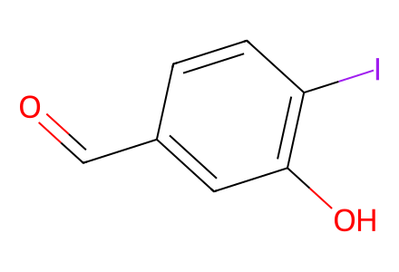
O=Cc1ccc(I)c(O)c125 molecular records; 18 preparation events; 3 selected paths. Main-paper Schemes 1-3: complete forward network for Isoriccardin C/D and the nitro analogue, from available aldehyde, boronic acids and supplied S1-S4 partners. SI is unavailable locally, so cited precursor preparations of S2/S4 and internal intermediates without drawings are outside source-bound coverage. THP stereocenters and macrocyclic planar stereochemistry remain unassigned; E/Z Wittig mixtures remain mixtures.
完整 JSON · 逐步 CSV · 路线序列 · SDF · HRMS 核对
| 事件 | 分子连接 | 报告产率 | Canonical reaction SMILES |
|---|---|---|---|
| E01 | starting-aldehyde → 1 | 1: 87% | O=Cc1ccc(I)c(O)c1>>O=Cc1ccc(I)c(OC2CCCCO2)c1 |
| E02 | 1 + ortho-boronic-acid → 2 | 2: 92% | COc1ccccc1B(O)O.O=Cc1ccc(I)c(OC2CCCCO2)c1>>O=Cc1ccc(COc2ccccc2)c(OC2CCCCO2)c1 |
| E03 | 2 + S1 → 3 | 87% combined mixture yield | Brc1ccc(C[P+](c2ccccc2)(c2ccccc2)c2ccccc2)cc1.O=Cc1ccc(COc2ccccc2)c(OC2CCCCO2)c1.[Br-]>>Brc1ccc(C=Cc2ccc(COc3ccccc3)c(OC3CCCCO3)c2)cc1 |
| E04 | 3 → 4 | 4: 78% | Brc1ccc(C=Cc2ccc(COc3ccccc3)c(OC3CCCCO3)c2)cc1>>Brc1ccc(CCc2ccc(COc3ccccc3)c(OC3CCCCO3)c2)cc1 |
| E05 | 4 + S2 → 5 | 5: 66% | Brc1ccc(CCc2ccc(COc3ccccc3)c(OC3CCCCO3)c2)cc1.C=Cc1ccc(OC)c(O)c1>>C=Cc1ccc(OC)c(Oc2ccc(CCc3ccc(COc4ccccc4)c(OC4CCCCO4)c3)cc2)c1 |
| E06 | 5 → 6 | 6: 91% | C=Cc1ccc(OC)c(Oc2ccc(CCc3ccc(COc4ccccc4)c(OC4CCCCO4)c3)cc2)c1>>C=Cc1ccc(OC)c(Oc2ccc(CCc3ccc(COc4ccccc4)c(O)c3)cc2)c1 |
| E07 | 6 → 7 | 7: 30% | C=Cc1ccc(OC)c(Oc2ccc(CCc3ccc(COc4ccccc4)c(O)c3)cc2)c1>>COc1ccc2cc1Oc1ccc(cc1)CCc1ccc(c(O)c1)COc1cccc(c1)/C=C/2 |
| E08 | 7 → 8 | 8: 55% | COc1ccc2cc1Oc1ccc(cc1)CCc1ccc(c(O)c1)COc1cccc(c1)/C=C/2>>Oc1cc2ccc1COc1cccc(c1)CCc1ccc(O)c(c1)Oc1ccc(cc1)CC2 |
| E09 | 1 + para-boronic-acid → 9 | 9: 85% | COc1ccc(B(O)O)cc1.O=Cc1ccc(I)c(OC2CCCCO2)c1>>COc1cccc(-c2ccc(C=O)cc2OC2CCCCO2)c1 |
| E10 | 9 + S1 → 10 | 10: 74% | Brc1ccc(C[P+](c2ccccc2)(c2ccccc2)c2ccccc2)cc1.COc1cccc(-c2ccc(C=O)cc2OC2CCCCO2)c1.[Br-]>>COc1cccc(-c2ccc(CCc3ccc(Br)cc3)cc2OC2CCCCO2)c1 |
| E11 | 10 + S2 → 11 | 11: 73% | C=Cc1ccc(OC)c(O)c1.COc1cccc(-c2ccc(CCc3ccc(Br)cc3)cc2OC2CCCCO2)c1>>C=Cc1ccc(OC)c(Oc2ccc(CCc3ccc(-c4cccc(OC)c4)c(OC4CCCCO4)c3)cc2)c1 |
| E12 | 11 → 12 | 12: 91% | C=Cc1ccc(OC)c(Oc2ccc(CCc3ccc(-c4cccc(OC)c4)c(OC4CCCCO4)c3)cc2)c1>>C=Cc1ccc(OC)c(Oc2ccc(CCc3ccc(-c4cccc(OC)c4)c(O)c3)cc2)c1 |
| E13 | 12 → 13 | 13: 25% | C=Cc1ccc(OC)c(Oc2ccc(CCc3ccc(-c4cccc(OC)c4)c(O)c3)cc2)c1>>COc1cc2cc(c1)-c1ccc(cc1O)CCc1ccc(cc1)Oc1cc(ccc1OC)/C=C/2 |
| E14 | 13 → 14 | 14: 44% | COc1cc2cc(c1)-c1ccc(cc1O)CCc1ccc(cc1)Oc1cc(ccc1OC)/C=C/2>>Oc1cc2cc(c1)-c1ccc(cc1O)CCc1ccc(cc1)Oc1cc(ccc1O)CC2 |
| E15 | 2 + S3 → 15 | not reported | O=Cc1ccc(COc2ccccc2)c(OC2CCCCO2)c1.[Br-].c1ccc(COc2ccc(C[P+](c3ccccc3)(c3ccccc3)c3ccccc3)cc2)cc1>>Oc1ccc(CCc2ccc(COc3ccccc3)c(OC3CCCCO3)c2)cc1 |
| E16 | 15 + S4 → 16 | 16: 71% | C=Cc1ccc([N+](=O)[O-])c(F)c1.Oc1ccc(CCc2ccc(COc3ccccc3)c(OC3CCCCO3)c2)cc1>>C=Cc1ccc([N+](=O)[O-])c(Oc2ccc(CCc3ccc(COc4ccccc4)c(OC4CCCCO4)c3)cc2)c1 |
| E17 | 16 → 17 | 17: 97% | C=Cc1ccc([N+](=O)[O-])c(Oc2ccc(CCc3ccc(COc4ccccc4)c(OC4CCCCO4)c3)cc2)c1>>C=Cc1ccc([N+](=O)[O-])c(Oc2ccc(CCc3ccc(COc4ccccc4)c(O)c3)cc2)c1 |
| E18 | 17 → 18 | 18: 57% | C=Cc1ccc([N+](=O)[O-])c(Oc2ccc(CCc3ccc(COc4ccccc4)c(O)c3)cc2)c1>>O=[N+]([O-])c1ccc2cc1Oc1ccc(cc1)CCc1ccc(c(O)c1)COc1cccc(c1)/C=C/2 |

O=Cc1ccc(I)c(O)c1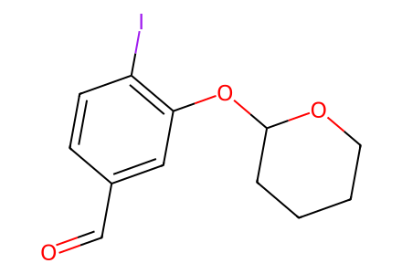
O=Cc1ccc(I)c(OC2CCCCO2)c1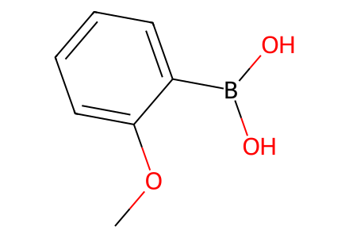
COc1ccccc1B(O)O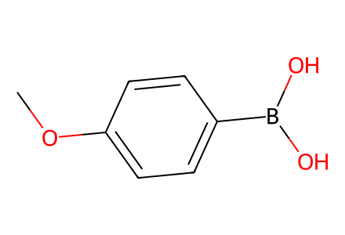
COc1ccc(B(O)O)cc1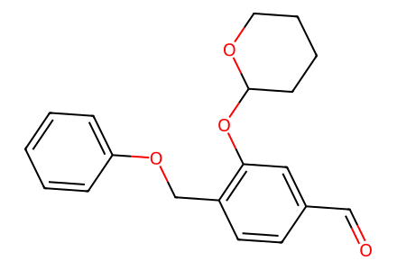
O=Cc1ccc(COc2ccccc2)c(OC2CCCCO2)c1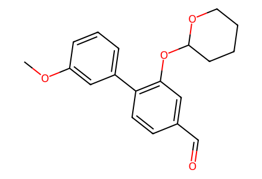
COc1cccc(-c2ccc(C=O)cc2OC2CCCCO2)c1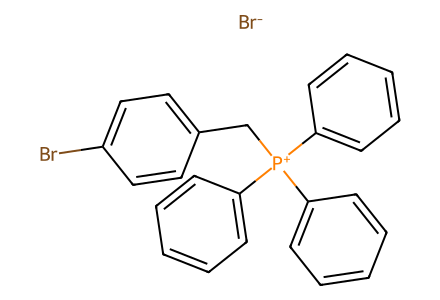
Brc1ccc(C[P+](c2ccccc2)(c2ccccc2)c2ccccc2)cc1.[Br-]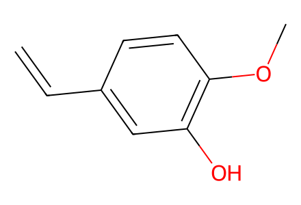
C=Cc1ccc(OC)c(O)c1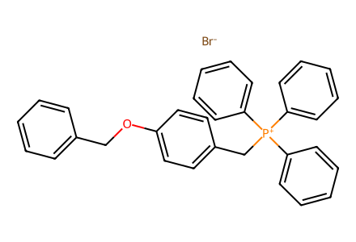
[Br-].c1ccc(COc2ccc(C[P+](c3ccccc3)(c3ccccc3)c3ccccc3)cc2)cc1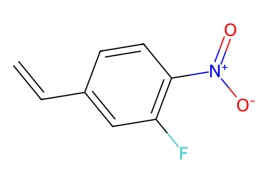
C=Cc1ccc([N+](=O)[O-])c(F)c1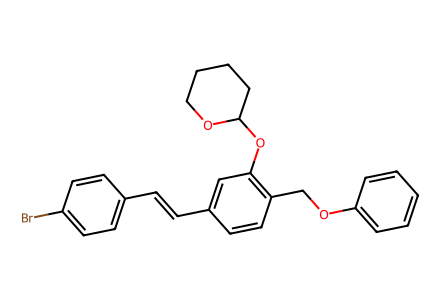
Brc1ccc(C=Cc2ccc(COc3ccccc3)c(OC3CCCCO3)c2)cc1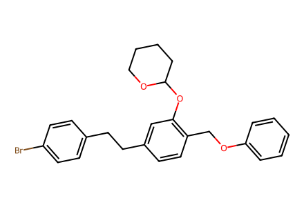
Brc1ccc(CCc2ccc(COc3ccccc3)c(OC3CCCCO3)c2)cc1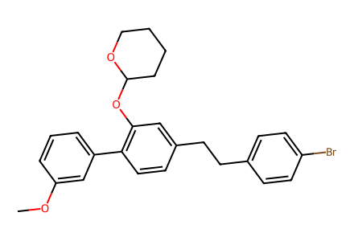
COc1cccc(-c2ccc(CCc3ccc(Br)cc3)cc2OC2CCCCO2)c1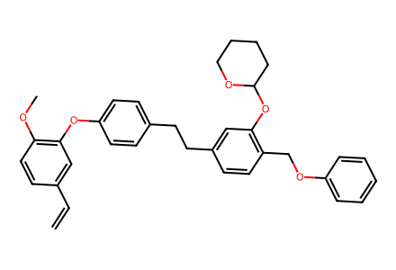
C=Cc1ccc(OC)c(Oc2ccc(CCc3ccc(COc4ccccc4)c(OC4CCCCO4)c3)cc2)c1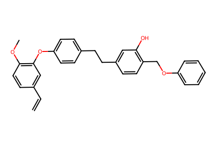
C=Cc1ccc(OC)c(Oc2ccc(CCc3ccc(COc4ccccc4)c(O)c3)cc2)c1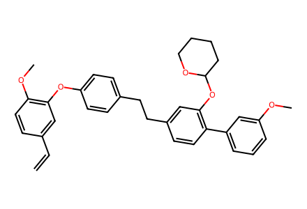
C=Cc1ccc(OC)c(Oc2ccc(CCc3ccc(-c4cccc(OC)c4)c(OC4CCCCO4)c3)cc2)c1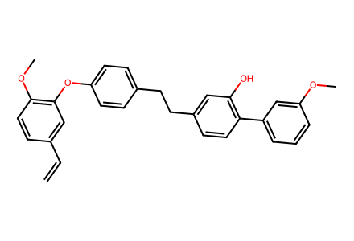
C=Cc1ccc(OC)c(Oc2ccc(CCc3ccc(-c4cccc(OC)c4)c(O)c3)cc2)c1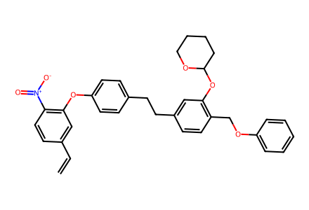
C=Cc1ccc([N+](=O)[O-])c(Oc2ccc(CCc3ccc(COc4ccccc4)c(OC4CCCCO4)c3)cc2)c1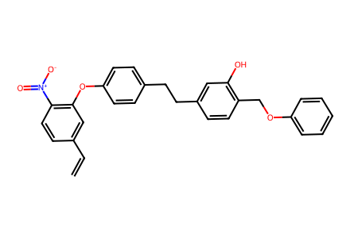
C=Cc1ccc([N+](=O)[O-])c(Oc2ccc(CCc3ccc(COc4ccccc4)c(O)c3)cc2)c1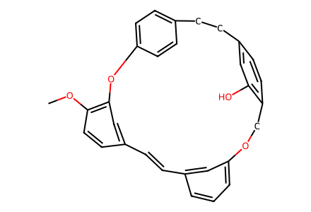
COc1ccc2cc1Oc1ccc(cc1)CCc1ccc(c(O)c1)COc1cccc(c1)/C=C/2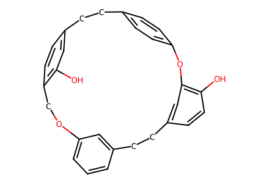
Oc1cc2ccc1COc1cccc(c1)CCc1ccc(O)c(c1)Oc1ccc(cc1)CC2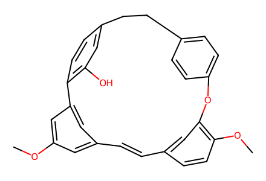
COc1cc2cc(c1)-c1ccc(cc1O)CCc1ccc(cc1)Oc1cc(ccc1OC)/C=C/2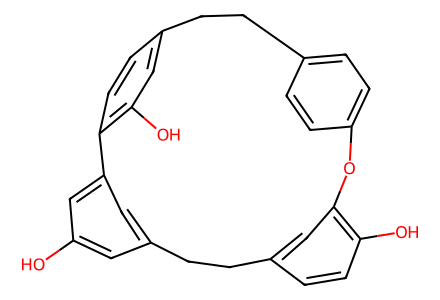
Oc1cc2cc(c1)-c1ccc(cc1O)CCc1ccc(cc1)Oc1cc(ccc1O)CC2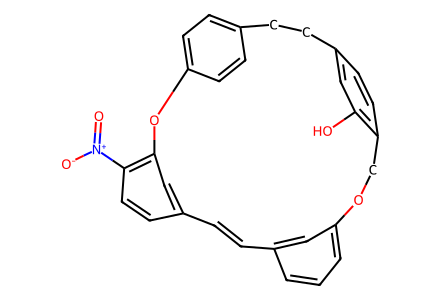
O=[N+]([O-])c1ccc2cc1Oc1ccc(cc1)CCc1ccc(c(O)c1)COc1cccc(c1)/C=C/2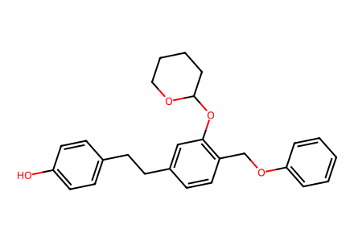
Oc1ccc(CCc2ccc(COc3ccccc3)c(OC3CCCCO3)c2)cc1